Git 分支
2021-08-18 17:44 字数：679 标签： Git创建分支
git branch <分支名>
git branch dev
查看分支
git branch # 等价于git branch -a，显示所有分支
效果： 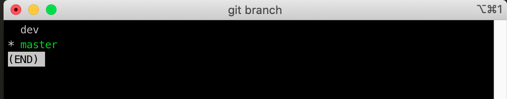
* 表示当前活跃的分支
切换分支
git checkout <分支名>
git checkout dev
效果：
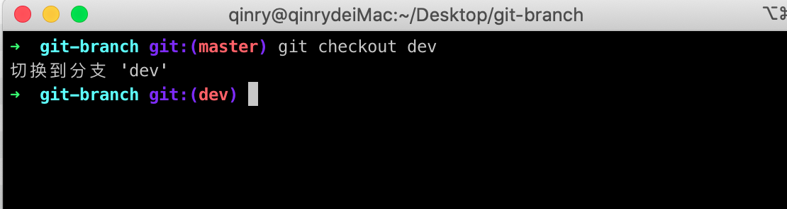
创建并切换到新分支
git checkout -b feature
效果：
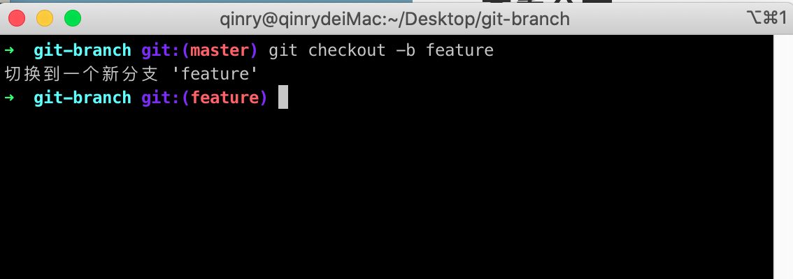
合并分支
合并前的准备
假如在master分支，新建了sample.txt并提交，提交信息维 “init commit”
sample.txt内容如下：
创建sample.txt
用git log查看提交信息 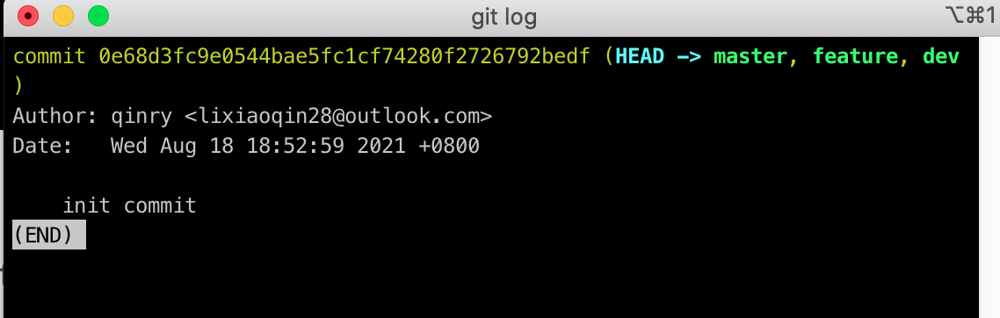
模拟两个分支的并行操作
切换到feature分支，在 sample.txt 追加新内容，并提交
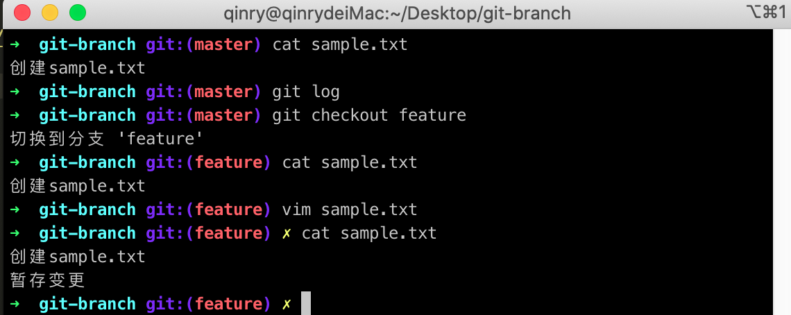
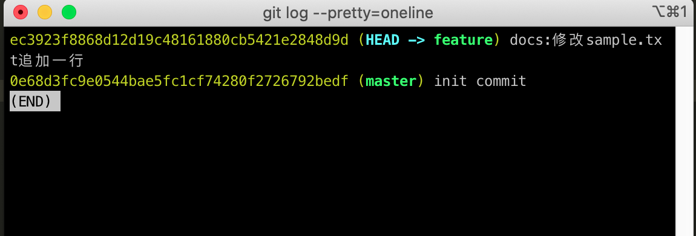
切换到dev分支，也在 sample.txt 也追加新内容
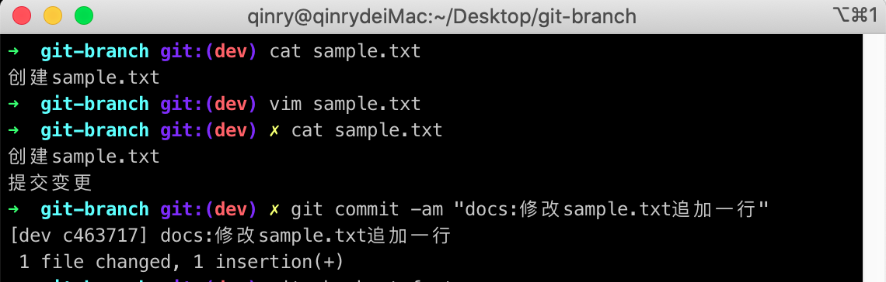
merge合并分支
切换回master分支，合并dev的提交到master。
git checkout master
git merge dev
效果： 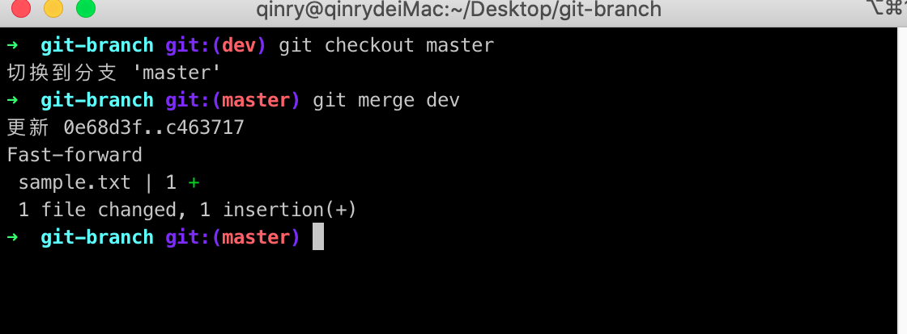
此分支间若没有冲突，会自动处理合并，由于dev包含了master的记录，通过把master分支的位置移动到dev的最新分支，则会快进合并（fast-forward）
解决合并时的冲突
git merge feature
效果： 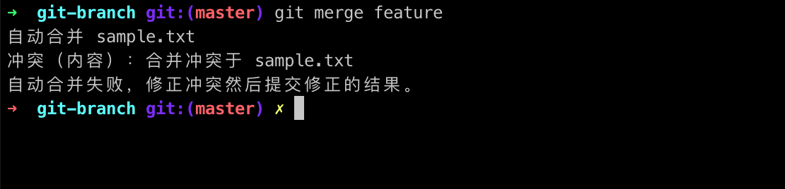
提示master和feature冲突发生在sample.txt
查看 sample.txt
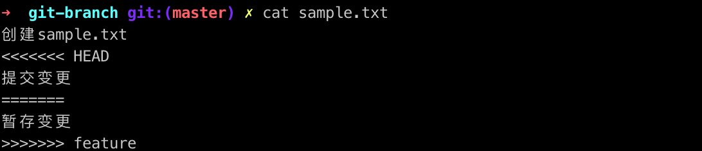
“««««<“和”===========“之间表示当前分支的提交
“=========“和”»»»»»>“之间表示合并分支引入的提交
处理冲突后，效果： 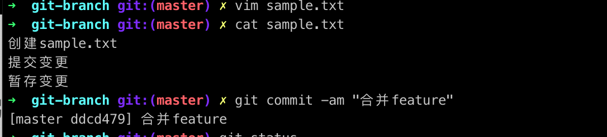
rebase合并分支
git reset --hard HEAD~
git checkout feature
git rebase master
效果： 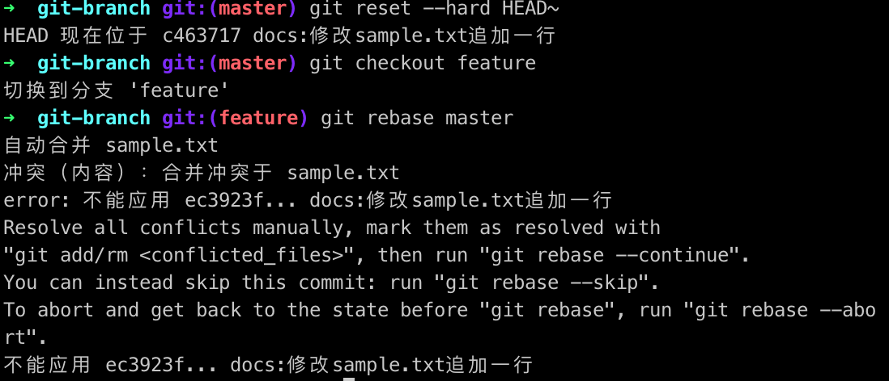
与使用merge合并分支时一样，处理冲突后
git add sample.txt
git rebase --continue
git checkout master
git merge feature
效果：
删除分支
git branch -d <要删除分支名>
git branch issue
git branch -d issue